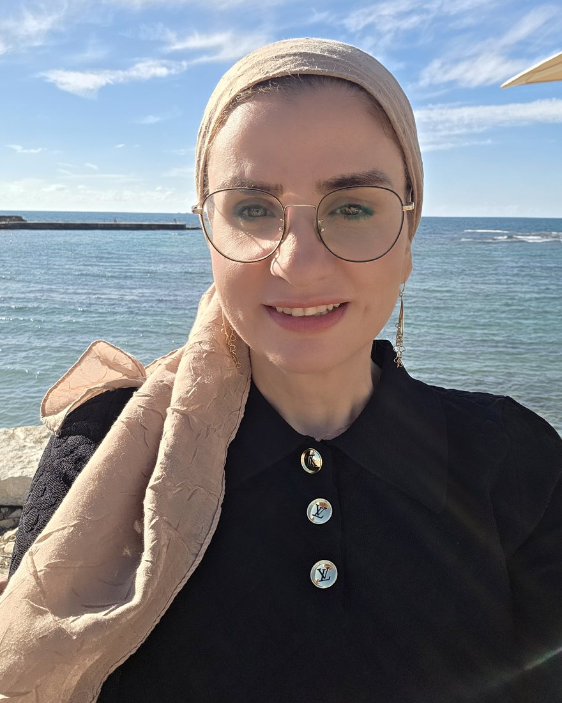

⭐ הרצאת הדגל של אתי טולדו
מחוברתלמי את מחוברת באמת?
לא בוחרים את הגל. בוחרים למה להתחבר. לומדים לגלוש.

דף הבית · סדנאות והרצאות
סדנאות והרצאות
סדנאות תהליכיות לאמהות, והרצאות וסדנאות חד־פעמיות להורים, לקהילות ולצוותי חינוך.
לא בוחרים את הגל. בוחרים למה להתחבר. לומדים לגלוש.

החיים מזמנים לנו גלים. לפעמים קטנים, לפעמים סוערים, ולפעמים כאלה שמטלטלים את כל מה שהכרנו.
אבל מה אם במקום להילחם בגלים, נלמד לגלוש עליהם ואפילו ליהנות מהדרך?
מפגש חווייתי, מרגש, מלא הומור והשראה, השזור בסיפורה האישי של משפחת טולדו.
מסע של אמונה, בחירה וגילוי הכוחות שבתוכנו, שמזמין אותנו להתחבר מחדש לעצמנו, לכוחות שקיבלנו ולמי שהעניק לנו אותם.
ולגלות שלא תמיד צריך לשנות את המציאות כדי לחיות חיים מלאים, שמחים ושלמים.
שינית לי את התפיסה של החיים.
לא משנה בת כמה אני ומה עברתי – עשית לי טוויסט במחשבה.
יצאתי עם הרבה כח. אני לומדת להעריך את החיים, ולראות את הטוב שיש בי ובחיים שלי.
הסתכלות שונה, וכלים טכניים איך ליצור את זה. זה משהו שמאוד מחזק אותי.
כי כשהחיבור נכון, גם הגלים הופכים לחלק מהדרך.
בואי נתאם ערב "מחוברת" ההזמנה נשלחת אליי בוואטסאפ, ואחזור אלייך לתיאוםחמישה מפגשים שהם התשתית של הבית. כשהיסודות איתנים ויציבים – הכל יכול לבוא עליהם.
בכל מפגש אנחנו קודם מבררות לעומק: מה קורה אצלי, אצל הילד ובבית. ואז יוצאות עם כלים פרקטיים ליישום מיד אחרי הסדנה – לא מחר בבוקר, כבר בדרך הביתה.
המחזור הבא עוד לא נקבע. אפשר להירשם לרשימת ההמתנה ולקבל עדכון ראשונה, ובינתיים גם לקבוע הדרכה אישית בקליניקה.
כשאני במינוס, אין לי ממה לתת. לכן מתחילות מהמקום הנכון: למצוא את הטוב שבי ואת הכוחות שכבר יש לי, ומשם להתניע. ונכיר את תיאום הציפיות ככלי לחיים – איך מנהלים ציפיות, ואיפה הן פוגשות אותנו בכל רובד: בבית, בזוגיות, בעבודה ומול הילדים.
יוצאות עם"בנק הכוחות" האישי שלי, וכלי פשוט לתיאום ציפיות שאפשר להפעיל כבר בבית.
שייכות היא צורך בסיסי, כמו אוכל ושינה. נבין את הצורך הפסיכולוגי מול הצורך הקיומי להרגיש שייך, ומה ילד עושה כשהוא לא מרגיש כך.
יוצאות עםדרכים קטנות ויומיומיות שגורמות לכל ילד להרגיש מורגש, משמעותי ואהוב, ותרגיל "עץ הילדים" שעושים יחד איתו בבית.
נזהה את הרגעים שבהם אנחנו מגיבות מתוך עייפות, כעס, לחץ או דאגה, ואת הדרכים שבולמות את הילד בלי שהתכוונו: איומים, השוואות, שיפוטיות וביקורת.
יוצאות עםאיך הופכים כל דרך בולמת לדרך מקדמת: במקום איום – אמון, במקום שיפוטיות – שייכות, במקום השוואה – תקווה, ובמקום ביקורת – ביטחון.
הרבה פעמים אנחנו בכלל לא יודעות מה הגבול שלנו – ולכן גם הילד לא יודע. נבין למה ילדים זקוקים לגבולות כשם שהם זקוקים לאהבה, נזהה את הגבולות שלנו, ונגלה על אילו גבולות וחוקים מהבית שבו גדלנו אנחנו נשענות, ומה מהם נכון להביא לבית שלנו היום.
יוצאות עםחוקי בית שעובדים באמת: מעטים, חלים על כולם, ידועים מראש, ברורים והוגנים.
במודל הרמזור נלמד להבחין בין שלושה סוגי גבולות: ירוק – מה שמאפשרים לילד בתוך המרחב שלו; צהוב – גבולות משותפים שקובעים יחד; ואדום – קווים שלא חוצים. ולסיום, נקודת הזינוק שלי: המקום שממנו הגעתי, היכן אני עכשיו, ואיך ממשיכים מכאן הלאה – כי כל מעבר הוא גם הזדמנות.
יוצאות עם"רמזור הבית" האישי שלכן, ותחושת כח להמשיך את הדרך.
לוחצים על כל קומה כדי לגלות מה עושים בה ←
סדנת הבסיס נגזרת מהסדנה המלאה, שמעמיקה בכל נושא ומוסיפה עוד כלים לבית.
סדנאות קצרות וממוקדות, למי שרוצה להעמיק בנושא אחד.
מה תקבלי?מקום להבין מה קורה במשפחה כשמצטרף אליה ילד מיוחד, איך זה משפיע עלינו כהורים, ואיך מוצאים כוחות – מתוך ההיכרות האישית שלי עם הדרך הזו.
לפרטיםמה תקבלי?תביני למה כל כך קשה לנו להציב גבול, ותצאי עם דרך ברורה להציב גבולות מתוך אהבה: חוקי בית עקביים, מעטים, ברורים והוגנים, שחלים על כולם.
לפרטיםמה תקבלי?כלים לחזק את החוסן הרגשי של הילד הקטן, וללוות אותו במצבים מיוחדים במשפחה מתוך רוגע וביטחון.
לפרטיםמה תקבלי?להבין מה עובר על הילד במעבר, לתת מקום לחששות שלו בלי להפחיד ובלי להשוות, ולבנות יחד סדר יום ואחריות שיעזרו לו להיכנס לכיתה א׳ בביטחון.
לפרטיםמה תקבלי?להבין את המעבר בין ילדות לבגרות, ולמצוא דרכים להתמודד בבריאות עם אתגרי הגיל – בלי לאבד את הקשר.
לפרטיםמה תקבלי?לזהות בזמן סימני אזהרה, ולעבור מכעס, אכזבה ובושה לשיחה ממוקדת, רגועה ומלאת אמון – כזו שמשאירה את הדלת פתוחה.
לפרטיםתודה על סדרת מפגשים מלמדת ומהנה. שמחתי להגיע לכל מפגש ולצאת עם ידע, טיפים וכלים שימושיים. עשית לי סדר בדברים וגרמת לי להבין מה באמת חשוב!
נכנסתי עם חששות, שאלות ותהיות. יצאתי מחוזקת, עם מוטיבציה ורצון ליישם את כל מה שלמדתי וחוויתי בסדנא.
הסדנא הייתה מאוד ברורה וממוקדת. בכל מפגש יצאנו עם עבודה לבית. מתיאום ציפיות שלא תמיד ברורות לכל בני הבית, ועד לטיפים על איך להכיר עוד קצת את הנשמות המתוקות שבביתנו.
תודה על צלילות והמון סדר בראש ובחיים, בנושא כה רגיש וחשוב: אמהות. התובנות שלך מלוות אותי ופוגשות אותי בהמון סיטואציות במהלך היום, ומאירות לי את הדרך.
נכנסתי לסדנא כאחת שחושבת שיודעת הכל אחרי 8 ילדים, ועשית לי בית ספר לחיים: למדתי לפרגן ולהקשיב לילדים, ולתת לחיים סדר עדיפויות.
למדתי כל כך הרבה על עצמי, על האמא שאני ועל בת הזוג שאני. מאז שקיבלתי את הכלים, התגובות שלי יותר שקולות, אני מרגישה בטוחה בעצמי, והבית שלנו יותר שקט ונינוח.
לא בוחרים את הגל. בוחרים למה להתחבר. לומדים לגלוש. מפגש מרגש, מלא הומור והשראה, מתוך הסיפור האישי של משפחת טולדו.
אמהות · קהילות נשים · גמלאיותלהזמנהחוסן לאמהות בתקופה של לחץ ומשבר: איך שומרים על הכח שלנו, ואיך נותנים לילדים ביטחון.
אמהותלהזמנהמעבר מרגש לילד ולהורים: מה עוזר, ממה כדאי להימנע, ואיך הופכים את קושי המעבר לצמיחה.
הורים לילדים העולים לכיתה א׳להזמנהמוגנות: מה חשוב שהילדים ידעו לספר לנו תמיד, בגילאי הגן ובית הספר היסודי.
הוריםלהזמנהסדנה חווייתית על מה שבאמת חשוב לנו בבית, ואיך זה נראה ביומיום.
הורים · קהילותלהזמנהאמון בראייה יהודית: להסתכל על הילד כפי שנשמתו עומדת במחשבה הקדומה, ולגלות את הכוחות הגנוזים בו.
הורים · קהילותלהזמנהפיתוח חוסן והתמודדות עם אתגרים בסביבת הגן.
גננות וצוותי גןלהזמנהתקשורת נכונה בין הורים לגננות: איך מנהלים גם שיחה מאתגרת מתוך ביטחון, ובונים שיתוף פעולה.
גננות וצוותי חינוךלהזמנהמפגש חווייתי שמחזק את הצוות כקבוצה, ומעצים את נקודת הכח של כל אחת.
צוותי גנים ומעונותלהזמנהרוצים נושא אחר או התאמה למסגרת שלכם? כתבו לי, ונבנה יחד.
שאלות נפוצות
התשובות לשאלות שאני הכי הרבה נשאלת. לא מצאת את מה שחיפשת? כתבי לי בוואטסאפ.
בשמחה גדולה, וזה לא עולה כסף. על כל התלבטות, שאלה או מחשבה – אפשר לכתוב לי בוואטסאפ או בטופס כאן באתר, ואני תמיד עונה וחוזרת, בעזרת השם. זה ממש לא משהו חריג. עדיף לא להישאר לבד עם ההתלבטות.
בהחלט, ובשמחה גדולה. אפשר להגיע למפגש אחד לבירור, למיקוד ולדיוק.
פשוט שואלים אותי. נתייעץ יחד, ונבדוק מה הכי מתאים לך ולבית שלך: סדנה, הדרכה אישית או מפגש אחד.
בדרך כלל זה תהליך של 4 עד 8 מפגשים.
בהחלט, וזו גם ההמלצה שלי. כששני ההורים מגיעים יחד, נוצרת בבית שפה אחידה.
מגיל 0 ועד 120. ההדרכה נותנת כלים בין-אישיים שמתאימים לכל שלב בחיים, ומשפיעים על כל תחומי החיים, בכל גיל.
לא. זה אותו תהליך ואותו מחיר, ואפשר לבחור מה שנוח לכם.
רק את עצמכם, עם נכונות לשינוי ולדיוק הבית שלכם.
לא, המפגשים הם להורים בלבד.
זה תלוי בעומס, אבל לרוב בין שבועיים לחודש. אפשר לפנות אליי בוואטסאפ או בטלפון לתיאום.
400 ₪ למפגש. לבוגרות הסדנאות שלי יש 20% הנחה.
המקום, היום והשעה משתנים ממחזור למחזור. מי שנרשמת לרשימת ההמתנה מקבלת את כל הפרטים לפני שהמחזור נפתח.
בין 8 ל-15 משתתפות.
לכל קבוצה יש קבוצה ייעודית, שבה נשלחים תכני המפגש, סיכום ושיעורי הבית. כך לא מפספסים כלום.
לכל הארץ.
מקום מתאים ומשתתפות. את כל השאר נתאם יחד.
בהחלט. כל הרצאה וסדנה נבנית בהתאמה לקהל, אחרי שיחת תיאום ציפיות והבנת הצורך – לגננות, לצוותי בית ספר, לערבי נשים ועוד.
לא. הסדנה מתאימה לכל הורה לילד עם צרכים מיוחדים.